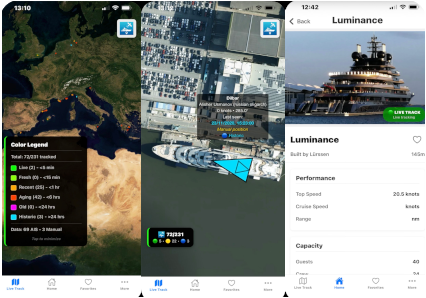

Superyacht Tracker
End-to-end iOS application design and development for real-time superyacht tracking. Frontend: Custom React Native UI with Mapbox GL integration, gesture-based navigation, offline-first architecture, and smooth animations. Backend: Node.js microservices handling AIS data ingestion, WebSocket server for live position broadcasts, PostgreSQL with PostGIS for geospatial queries, Redis caching layer, and RESTful API with JWT authentication. UX/UI Design: User research with yacht operators, wireframing and prototyping in Figma, responsive layouts optimized for marine environments, dark mode implementation, and accessibility features. Infrastructure: AWS deployment with EC2, RDS, ElastiCache, CloudFront CDN, automated CI/CD pipeline, monitoring with CloudWatch, and App Store deployment workflow.